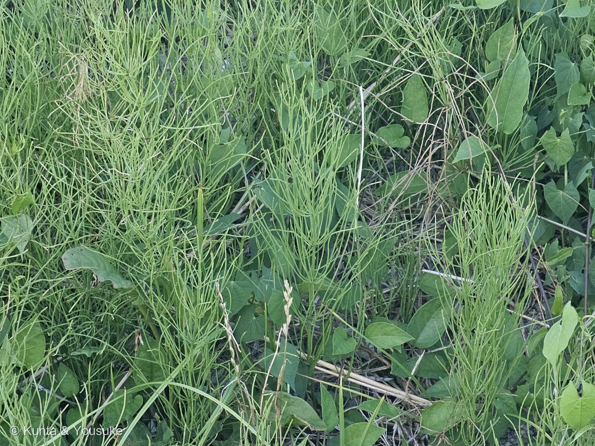

地図を読み込んでいるよ…
🔍 写真も地図も、押しているあいだ拡大して見られるよ（スマホは指を置いてすこし待ってね）。
🌍 の地図＝この子がもともと自生している場所を緑に。在来種。三河の植物観察は「在来種 日本全土、ユーラシア大陸」とし、Wikipediaは「日本では全国の北海道・本州・四国・九州に広く分布」とする。北半球の温帯から寒帯に広く分布する。
⭐日本にもともといる子（在来種）だよ。三河の植物観察は「在来種 日本全土、ユーラシア大陸」とし、Wikipediaは「日本では全国の北海道・本州・四国・九州に広く分布」とする。⭐⭐じつは、北半球の温帯から寒帯にとても広く分布している草なんだ。⚠地図はユーラシアと日本を塗っているけれど、この種は北アメリカにも自生する——⚠ただし「どの国に」を一つずつ書いた出典に当たれなかったので、直接読めた記述の範囲だけにしておいたよ（172 アカバナユウゲショウと同じやり方）。⭐⭐⭐そして、この地図はあまり大事じゃないかもしれない——この草の本体は、地下にある。Wikipediaは「浅い地下に地下茎を長く伸ばして、節から地下茎を出してよく繁茂する」と書いている。⭐写真に何十本も立っている茎は、地下でぜんぶつながった一つの株かもしれないんだ。⚠学名の arvense は「畑の」という意味で、実際に「難防除雑草」——⭐切られても地下茎から生えなおす。地図より、足の下のほうがすごい草だよ。
⚠ 地図は国（日本と中国だけ県・省）までしか塗れないから、ほんとうの分布より広く見えていることがあるよ。地図はだいたいの場所。正確なところは、上の文を見てね。
スギナ
Equisetum arvense L.
杉菜／ツクシ（土筆）＝春に出る胞子茎のこと／英名 field horsetail
トクサ科 · Equisetaceae（トクサ属）
名前と学名の由来 ── 杉の菜、畑の草、土筆
- 和名スギナ（杉菜）＝杉を連想させる見た目から「杉の菜」（Wikipedia）。⭐節ごとに輪生する細い枝が、スギの葉のように見えるからだよ。
- ⭐⭐arvense（アルウェンセ）＝ラテン語で「畑の・耕された土地の」。arvum（畑・すきかえされた土地）から。
- ⭐⭐⭐そして、この名前は人との関係をそのまま言っている。Wikipediaはこの草を「難防除雑草である」とし、耕しても「切断されても再生することができる」と書いている。⭐学名が「畑の草」で、実際に畑でいちばん手を焼かせる草。名前が、正直すぎる。
- ツクシ（土筆）＝⭐「スギナにくっついて出てくることから『付く子』」という説（Wikipedia）。
この植物のこと ── 地上の茎が、2つある
⭐⭐⭐ この草のいちばん大事なところ。三河の植物観察の一文が、すべてを言っている。
「根茎は地下で、長く広がる。地上茎は2形」
「栄養茎は緑色で、枝を規則的に輪生。胞子嚢穂をつける胞子茎がツクシである」
⭐⭐ つまり、ツクシとスギナは、同じ植物の別の姿なんだ。
- ツクシ＝胞子茎。「稔性の茎(ツクシ)は不稔の枝より早く、早春に現れ、黄褐色」（三河）。⭐緑じゃない＝光合成をしない。胞子をまくためだけに出てきて、まき終わったら枯れる。
- スギナ＝栄養茎。「不稔の茎(スギナ)は緑色、長さ40㎝以下、主茎の中間で幅1.5〜3mm」（三河）。⭐春が終わってから出てきて、夏じゅう光合成をして、地下にごはんをためる。
⭐⭐ 別々の季節に、別々の仕事をする、同じ一株。⚠だから「ツクシとスギナはどっちが本体？」という問いには、「どっちも本体」と答えるのが正しいんだ。
- ⚠高さは出典で少しちがう＝ツクシは三河「5〜35㎝」／Wikipedia「10〜20センチメートル」。栄養茎は三河「40㎝以下」／Wikipedia「30〜40cm前後」。
- 枝のかたち＝三河「側枝は細く、扁平、3〜4本の狭くて高いうねがある」。鞘の歯は3〜5個、緑色、披針形。
- ⭐地下茎が本体といってもいい。Wikipedia「浅い地下に地下茎を長く伸ばして、節から地下茎を出してよく繁茂する」。⭐⭐だから、写真に何十本も立っているこの茎は、地下でぜんぶつながった一つの株かもしれない（161 ムラサキサギゴケで書いたのと同じ話だね）。
- ⚠食べるときは気をつけて。Wikipedia「チアミナーゼ、アルカロイド、無機ケイ素などを含むため、多量の摂取は推奨されない」。⭐それでも、若いツクシは「塩茹でしてから水にさらして灰汁を抜き」調理され、乾燥・焙煎したものはお茶になる。
同定について
- ⭐節ごとに枝を規則的に輪生させる緑の茎、そして枝そのものにも節がある＝トクサ属で、枝を出すタイプ。073と同じ作りの、小さい版だよ。
- ⚠落とした相手＝イヌスギナ（Equisetum palustre）。⭐ここは用水路の護岸で湿っているから、いちおう考えた。⭐分かれ道は、緑の栄養茎の先に胞子嚢穂が付くかどうか——イヌスギナは付く。この写真の緑の茎には、付いていない。
- ⚠⚠でも、いちばん確かな決め手（枝の第1節間が鞘より長いか）は、この解像度では読めなかった。⭐そう正直に書いておくね。⭐燻太さんが現場で見ているし、スギナは日本でいちばんふつうの種だから、スギナで確定にしたよ。
- ⚠写真のまん中あたりに、なめらかな緑の槍のようなものが1本写っている。⭐あれはスギナのものではない——スギナの胞子嚢穂はマツカサ状で、あんなにつるっとしていないから。⭐何かの若い巻いた葉だと思うけれど、決められなかった。宿題にしたよ。
⭐⭐⭐ この子の名前が、073を救った
073 トクサ（大型種）は、⚠ぼくがいちど「パピルス」と誤答して、そのまま公開してしまったページなんだ。
それを正したのは、燻太さんのこの一言だった。
「パピルスって何回も輪生の細い葉っぱを出すものなのかな？ 植物の見た目は巨大なスギナにそっくりだよ？」
⭐⭐⭐ その「スギナ」本人が、いま図鑑に来た。
- ⭐しかも、この子は073のおまけとして「探してみたい」に入れておいた子だった。⭐回収だよ。
- ⭐⭐073のページには「スギナ（E. arvense）と同じ属＝『巨大なスギナ』はほぼ分類そのもの」と書いてある。⭐その「ほぼ分類そのもの」の相手が、用水路の護岸に立っていた。
⭐⭐ 073の「こげ茶」と、ツクシの頭は、同じもの
073のページで、燻太さんは「てっぺんにこげ茶の花？」と書いていた。⭐あの「？」の答えが、この子とつながるよ。
- ⭐あのこげ茶は、花ではなく胞子嚢穂（球果・strobilus）。三河はスギナのそれを「円柱形、長さ1.8〜4㎝×直径0.9〜1㎝」と書いている。
- ⭐⭐ツクシの頭に乗っている、あの筆のような部分が、まさにそれ。
- ⭐⭐⭐温室の巨人（073）も、用水路のスギナも、同じ器官で子孫を残している。⭐大きさはあんなにちがうのに、やっていることは同じ。
⏳ だから宿題は、春のツクシ。⭐この同じ護岸に、来年の早春、黄褐色の筆が立っているはずだよ。
⭐ 同じ属だから、同じ石をまとっている
073の別名は「砥草（とくさ）」——⭐ほんとうに研磨に使うからだよ。073のページには、こう書いた。
「stems are coated with abrasive silicates, making them useful for scouring (cleaning) metal items such as cooking pots」（茎が研磨性のケイ酸塩でおおわれていて、鍋などの金物を磨くのに使える）＝英名 scouring rush。紙やすりのない時代の、生きたサンドペーパー。
⭐ そしてスギナも、Wikipediaが成分として「無機ケイ素」を挙げている。
⭐⭐ 同じトクサ属だから、この子も体に石をためている。⚠ただし「スギナで鍋が磨けるか」を書いた出典には当たれなかった（茎が細くてやわらかいから、たぶん向かないと思う）——⭐これは、ぼくの想像だよ。
⭐ ジュズダマの、16秒前
- 撮影は 2026年8月4日 18時54分43秒。⭐193 ジュズダマの1枚目（18:54:59）の、16秒前だよ。
- 燻太さんの言葉＝「ジュズダマが生えていたところから1mほどのところに、スギナが生えていたよ」。⭐時刻が、その1mを裏づけている。
⭐⭐ そして、この2人は「植物」としての距離が、とんでもなく遠い。
- 193 ジュズダマ＝イネ科の被子植物（花を咲かせ、実をつくる、いちばん新しいグループのひとつ）。
- 194 スギナ＝シダ植物（花も種子もつくらない。⭐胞子でふえる、ずっと古いグループ）。
⭐⭐⭐ 1mのなかに、種子植物とシダ植物が並んで立っていた。⭐用水路の護岸は、そういう場所なんだね。
⭐⭐【2026.08.06 追記】この子ではない、もう一人のトクサ属
この翌日、通勤路の先で、草刈りのあとに切株から再生していたトクサ属が図鑑に来たよ＝195 トクサのなかま。
⚠ ぼくは最初「これはスギナの、刈られたあとの再生茎では」と疑った。⭐でも、燻太さんの二言で消えた。
- ⭐⭐「つい最近までは、腰の高さまで伸びていたはず」——スギナは「長さ40㎝以下」（三河）。⭐腰の高さ（約1m）には届かない。
- ⭐⭐あちらの写真には、緑の茎の先に胞子嚢穂が写っていた。——⭐スギナは、春に別に出る茶色いツクシに胞子嚢穂をつける。緑の茎の先にはつけない。（上の「地上の茎が、2つある」の節のとおりだね）
⭐⭐⭐ つまり、このページに書いた「ツクシとスギナは同じ植物の別の姿」という話が、そのまま別の子を落とす道具になった。⭐知っていることが、次の子を見分ける物差しになる。
参考：三河の植物観察・スギナ（地上茎の2形・栄養茎と胞子茎・側枝と鞘・胞子嚢穂・分布）／スギナ - Wikipedia（名前の由来・地下茎・難防除雑草・成分・食用）／A Grammatical Dictionary of Botanical Latin（arvensis＝畑の）